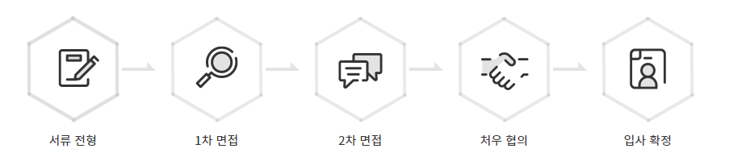

Global Digital Paradigm Leader
컴투스와 미래를 그려갈 인재를 찾습니다.
컴투스는 게임,콘텐츠,블록체인 경제 시스템, 메타버스를 포괄하는
새로운 글로벌 디지털 패러다임을 제시하고 있습니다.
채용 프로세스
- 내부 사정에 따라 전형 절차, 일정 등은 변경 될 수 있습니다. (변동 시 사전 개별 안내 예정)
- 일부 직무의 경우 1차 면접 시 사전 과제, 필기 테스트 등이 진행되며 세부 내용은 개별 공고에서 확인하실 수 있습니다.
* 수시 채용 공고의 경우 적격자 채용 시 조기 마감이 될 수 있음을 알려드립니다.
* 장애인, 국가보훈대상자는 관계 법령에 의거하여 우대 합니다.
* 지원서 내용이 사실과 다를 경우 합격 및 입사가 취소될 수 있습니다.
* 채용 과정에서 오프라인으로 제출한 서류가 있을 경우, 해당 공고의 채용여부가 확정된 이후 14일 이내에 반환을 요청할 수 있습니다.
반환 희망 시 문의처를 통해 반환을 청구해 주시기 바라며, 접수 후 14일 내 요청 서류를 등기우편으로 발송해 드립니다.
오프라인으로 제출한 서류는 당사자가 반환을 청구하지 않을 경우 14일까지 보관된 후 파기됩니다.
단, 홈페이지 또는 전자우편을 통해 제출한 일체의 서류, 당사의 요청이 없음에도 자발적으로 제출한 서류는 반환 청구 대상에 포함되지 않으며
당사 개인정보처리방침에 따라서 2년간 보관된 후 파기됩니다.